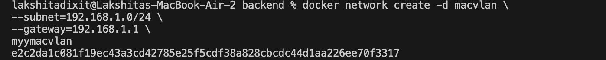
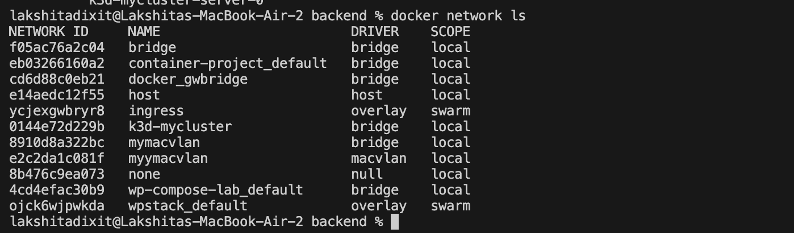
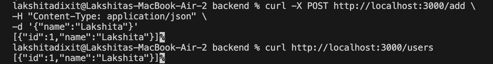
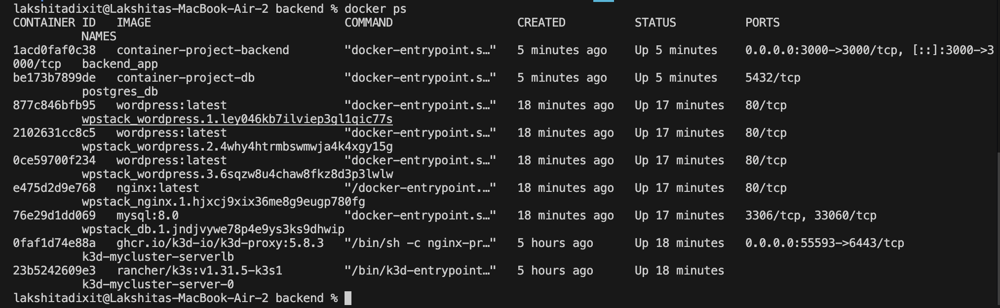
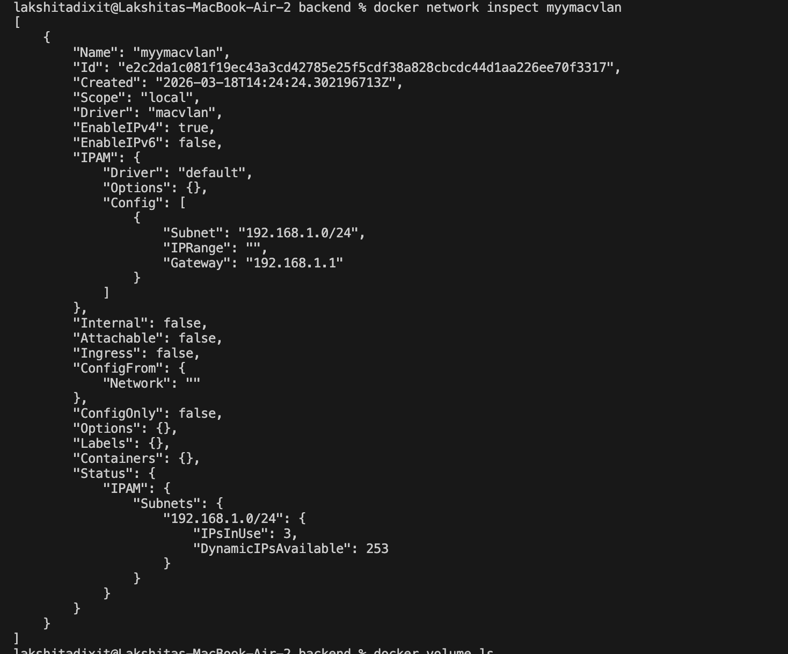
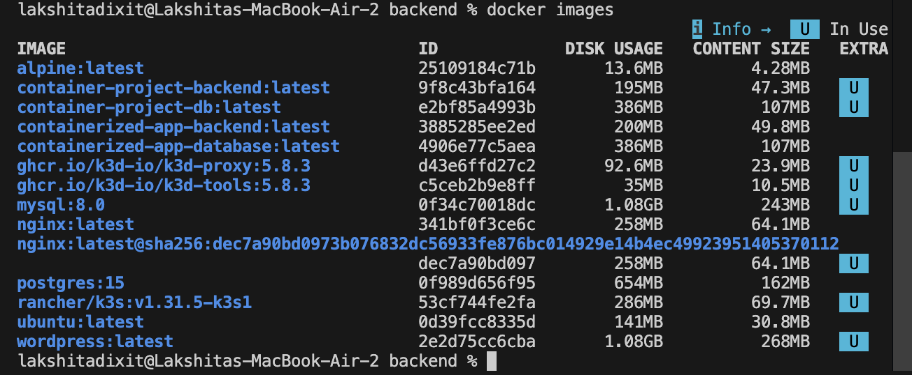
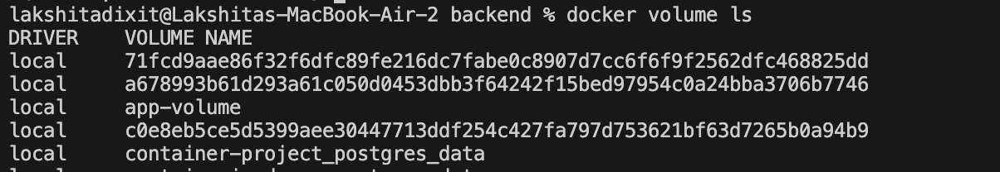

Containerized Web Application with PostgreSQL
Project Overview
This project demonstrates how to design, containerize and deploy a web application using Docker.
Backend API: Node.js + Express
Database: PostgreSQL
Orchestration: Docker Compose
Networking: Docker Macvlan
Storage: Docker Named Volume
Architecture
Client (Browser / Postman) ↓ localhost:3000 (Port Mapping) ↓ Docker Host ↓ Docker Bridge Network (172.18.0.0/16) ↓ Backend Container (Node.js + Express) ↓ PostgreSQL Container ↓ Docker Volume (Persistent Storage)

Repository Structure
container-project/ ├── backend/ │ ├── Dockerfile │ ├── package.json │ ├── package-lock.json │ ├── server.js │ └── node_modules/ ├── database/ │ ├── Dockerfile │ └── init.sql ├── docker-compose.yml ├── .dockerignore └── README.md
Create Macvlan Network
docker network create -d macvlan \ --subnet=192.168.1.0/24 \ --gateway=192.168.1.1 \ myymacvlan


Build and Run
docker-compose up -d
Check Running Containers
docker ps


Test API
curl http://localhost:3000/users


Insert Record
curl -X POST http://localhost:3000/add \
-H "Content-Type: application/json"
-d '{"name": "Lakshita"}'
Fetch Users
curl http://localhost:3000/users

Verify Containers
sudo docker ps

Verify Network
docker network inspect mymacvlan

Verify Images
docker images

Verify Volumes
docker volume ls

Volume Persistence
Step 1 — Insert Data curl -X POST http://localhost:3000/add Step 2 — Retrieve Data curl http://localhost:3000/users Step 3 — Stop Containers docker-compose down Step 4 — Restart Containers docker-compose up -d Step 5 — Verify Persistence curl http://localhost:3000/users


Project Summary
This project presents the design, containerization, and deployment of a multi-container web application using Docker and Docker Compose, demonstrating fundamental DevOps and containerization principles. The system consists of a Node.js and Express backend service integrated with a PostgreSQL database, each running in isolated containers to ensure modular architecture and service independence. Docker Compose is utilized for service orchestration and dependency management, while Docker networking enables seamless inter-container communication. Additionally, Docker named volumes are implemented to provide persistent storage, ensuring that database data remains intact across container restarts. The project further validates container functionality through API testing and verification of running containers, networks, images, and volumes, thereby illustrating practical concepts such as container lifecycle management, environment configuration, data persistence, and scalable application deployment within a containerized environment.